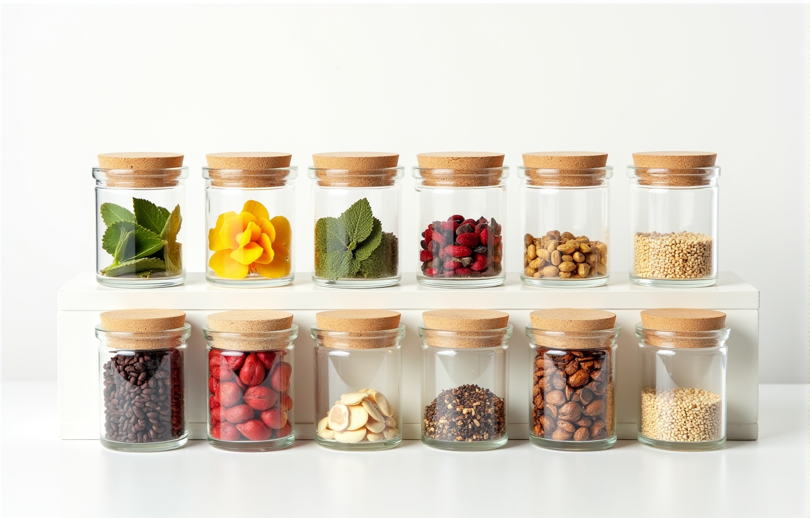

What we offer
취향의 권리가 파는 것
01 · Ingredients
원료
허브·곡물 12종 단품, 중량별 구매
원료 페이지 → 02 · Blending Kit블렌딩 키트
VER.1 Taste · VER.2 Depth · 세트
키트 페이지 → 03 · Education교육 재료·자료
수업용 키트, 블렌딩 노트·교재
교육 페이지 → 04 · Partners강사 연결
강사 파트너 가입(승인제), 강의 문의
강사 페이지 →오픈 시에는 키트(시제품)로 시작하고, 원료 단품은 순서대로 엽니다. 원료별 「입고 알림 신청」으로 열리는 순서를 받아 보세요.

The Right to Taste취향은 정해지는 것이 아니라,
취향은 정해지는 것이 아니라,
완성되어 갑니다.
열두 가지 원료, 4,000가지가 넘는 조합. 처음엔 시음으로 고른 스물한 가지 레시피에서 시작하고, 그다음은 당신의 비율로. 전문가에게는 원칙이 있습니다. 당신에게는 취향의 권리가 있습니다.
브랜드 이야기